RoleProduct Strategist, UX Designer, and Content Strategist
Timeframe2018 – 2021
Client / PartnerbabyMed
Overview
Fertility care centers on reactive treatment, leaving a gap in proactive, preventative support for people starting to think about their fertility. With Obie, our mission was to make reproductive health more accessible: an OB/GYN in your pocket, delivering insights tailored to your own fertility journey.
I worked across product strategy, UX design, and content strategy: defining the audience, shaping the product and content logic that powers personalization, and helping launch an MVP that turned the existing readership into an active user base.
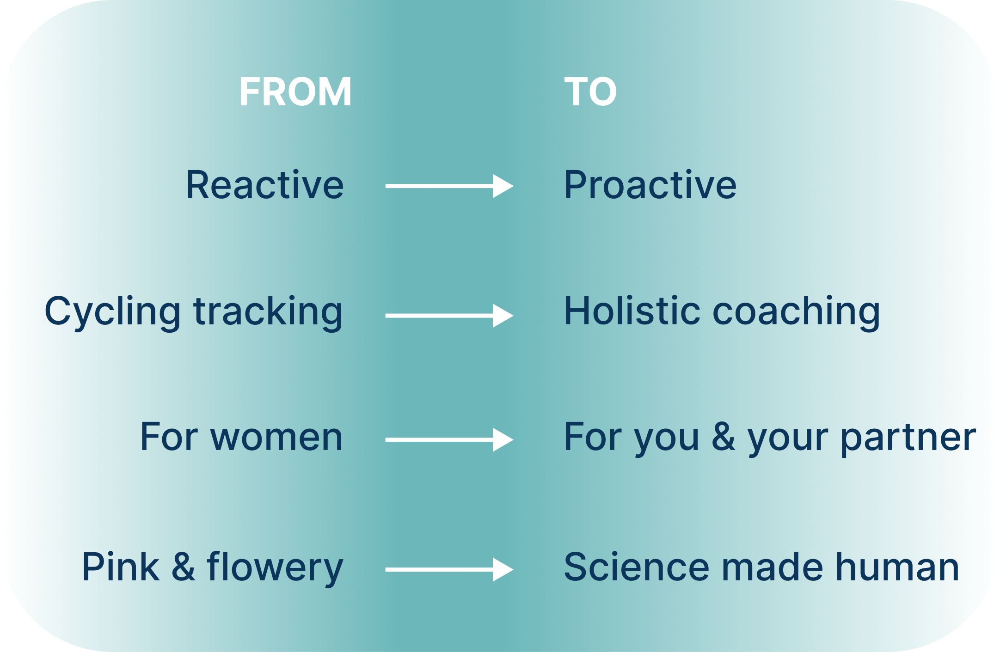
The repositioning that shaped the brand: from a reactive, women-only tracking tool to a proactive, holistic experience for couples.
Background
A growing fertility crisis.
U.S. birth rates had dropped 16% even as more people wanted children. Research pointed to three gaps: fertility education, preventative care, and affordable alternatives to costly treatments like IVF, which averaged $50,000 per patient.
The medical system treats infertility rather than preventing it.
Innovation in the category, like IVF, focuses on curing infertility after the fact rather than helping people proactively optimize their fertility.
A large organic audience already existed.
A world-renowned OB/GYN's blog reached 10M readers a year, proof people wanted trustworthy fertility content, but babyMed lacked the brand recognition and user loyalty to turn that reach into something more.
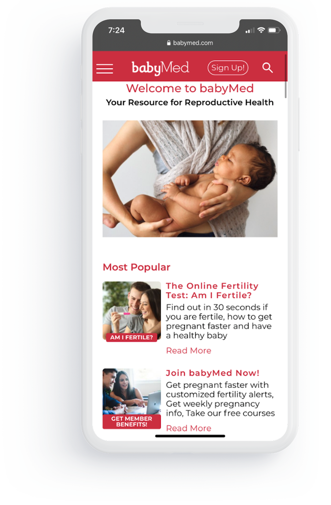
Dr. Amos Grünebaum built babyMed to provide accurate, accessible fertility guidance outside office visits. By 2018, it reached 1 in 3 pregnant women in the U.S. through organic search alone.
Market and user research
I mapped the fertility landscape, from fertility solutions to tracking apps and at-home testing devices, across two axes: fertility-specific to holistic reproductive care, and standalone products to fully integrated ecosystems. Most players fell into one narrow lane, but few offered a seamless, connected ecosystem for holistic reproductive health.
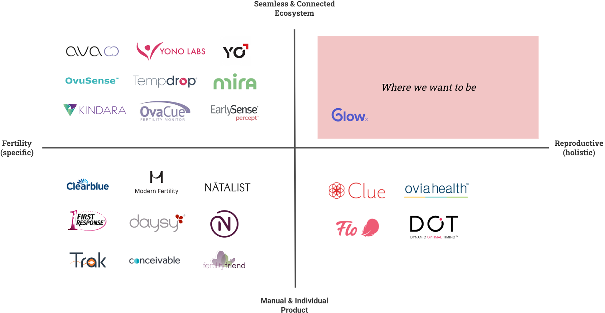
To understand the emotional and practical realities of fertility, we conducted in-depth interviews with 15 participants: 11 women and 4 men, ages 30 to 40, at different stages of trying to conceive. I helped build the discussion guide from desk research and input from Dr. Amos Grünebaum, the OB-GYN behind babyMed. The conversations surfaced confusion, anxiety, and hope, and revealed common phases where people needed support, not just while trying to conceive.
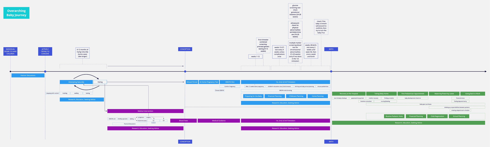
The overarching journey: from first considering parenthood through conception and birth.
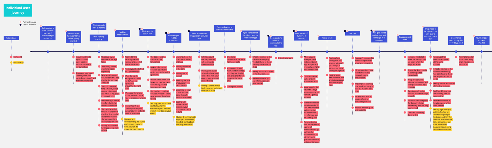
A closer look at one path within it: the emotional and logistical reality of fertility treatment.
Mapping the content architecture
Before landing on the final UI, I sketched out the app's information architecture on a whiteboard, mapping how a personalized "For You" feed, a saved library, and article detail views would connect, and where personalization (recommended articles, tailored search, saved collections) would surface throughout.
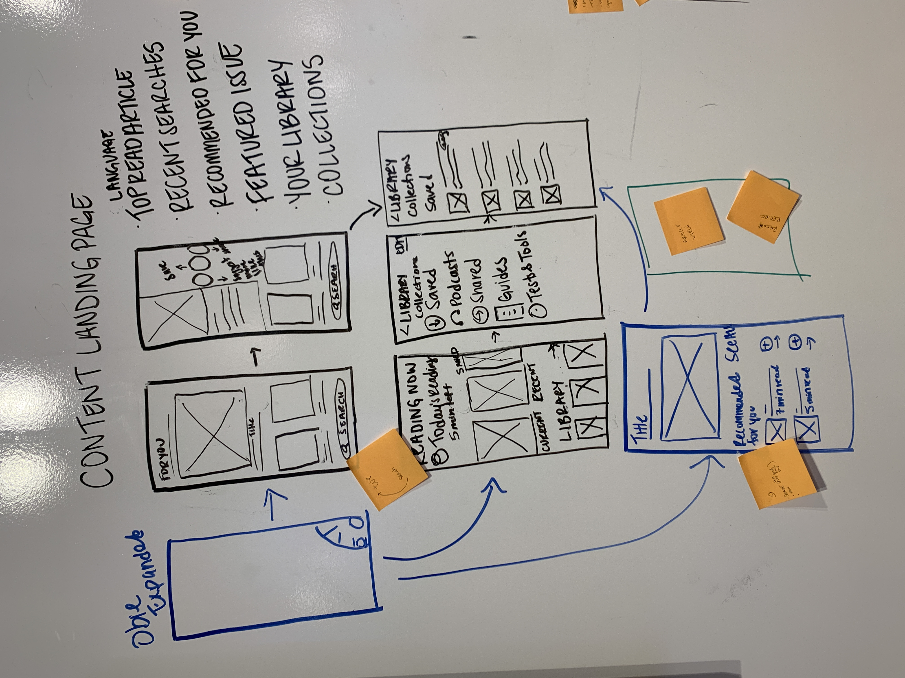
Early information-architecture sketch: content landing page, library, and article detail flows.
The team and I worked through rounds of wireframing, and designed an interactive prototype with our prioritized capabilities.
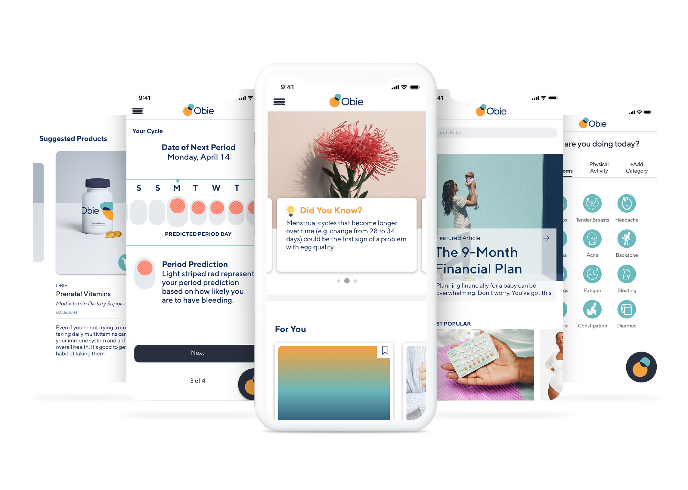
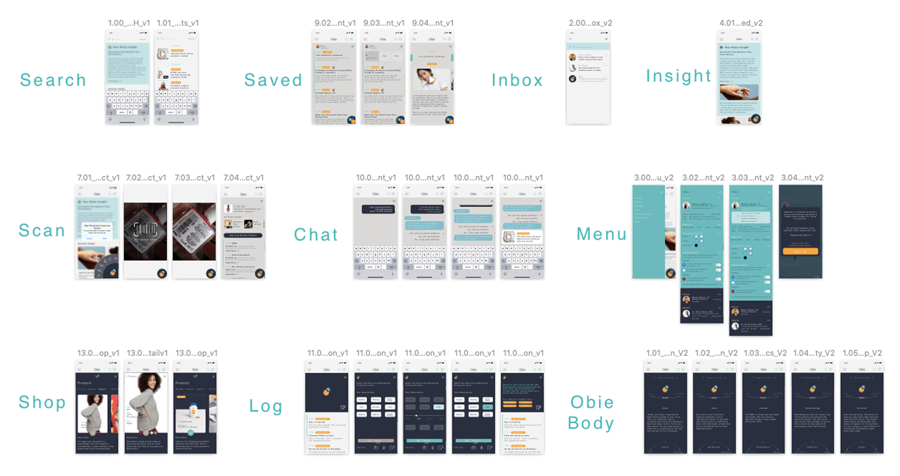
That process carried through to the final UI, and to the full inventory of screens across every part of the app.
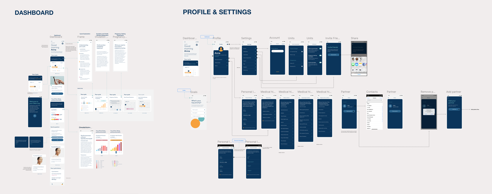
Mid-fidelity wireframes for the dashboard and profile & settings flows.
Once in TestFlight, I ran structured rounds of QA and design refinement, flagging inconsistencies and tightening the details before launch.
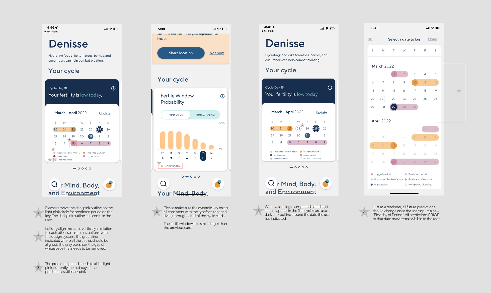
QA and refinement notes on the cycle-tracking screens ahead of launch.
Content strategy and personalization
To understand the emotional, financial, and behavioral dimensions of each journey, I mapped core user journeys, from the overarching path to parenthood down to the specific path through fertility treatment, then aligned content topics and features to support them. This helped highlight the gaps in existing babyMed content and inform article creation for our writers.
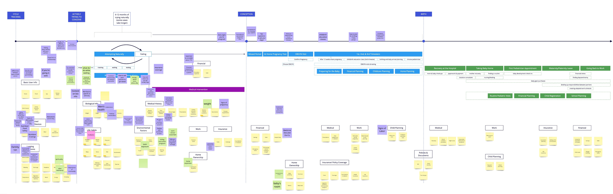
Content and topic mapping across the full cycle-tracking-to-birth timeline.
Article
Are you ready for pregnancy and parenthood?
3 big life questions to ask yourself before trying to get pregnant.
Article
3 things to know about getting off the birth control pill
Here's what you need to know if you want to stop taking your birth control pill.
Article
Things to consider when trying to get pregnant after a miscarriage
Why statistics are on your side for a future pregnancy.
We built a system that used behavioral and health data to recommend the right content, at the right moment, for each user, mapping every branch of a person's situation to the content and products that fit their needs.
The personalization logic: from a person's situation to the content and product moments that matter most to them.
Sample data points feeding the recommendation engine:
Trying to conceiveAge 35–39Low BMIIrregular periodHas a partnerPrior miscarriageFatigueModerate stressLow cervix position
Results
Obie's MVP captured 400+ behavioral data points across 300T+ unique combinations, powering a content engine that improved its recommendations with each interaction, and grew a user base organically off the existing 10M-reader audience.
50%App Store conversion rate
10Kusers
20%DAU/MAU
18.6%open rate on The Periodical, the Obie newsletter
359%increased conversion using merchandising content
🏆 Jay Chiat Silver Award for Healthcare Strategy, 2021
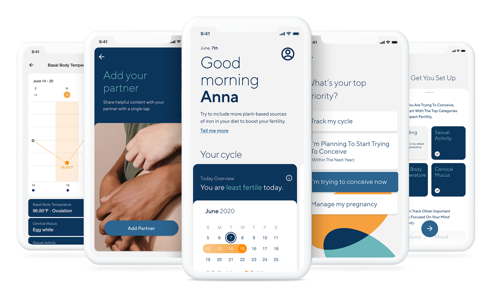
The shipped experience: holistic tracking and personalized daily guidance for your reproductive health.